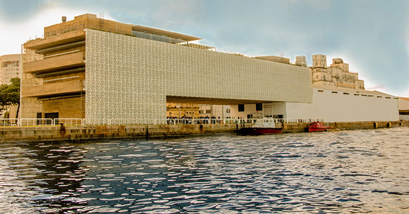

Outros Pontos Turísticos
Conhecendo Recife Antigo!
Além do Marco Zero existem muitos outros pontos turísticos que vale a pena visitar no Recife Antigo. Destacamos alguns deles a seguir.
1. Museu Cais do Sertão
2. Museu Paço do Frevo

Além do Marco Zero existem muitos outros pontos turísticos que vale a pena visitar no Recife Antigo. Destacamos alguns deles a seguir.